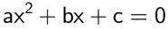

O que é uma função?
Uma função é uma regra matemática que relaciona cada elemento x, de um conjunto A, a um único elemento y, de um conjunto B. Os conjuntos A e B são conhecidos, respectivamente, como domínio e contradomínio. Já x e y são conhecidos, respectivamente, como variável independente e variável dependente, pois o valor de y sempre dependerá do valor de x.
Assim, as funções do primeiro grau são regras que relacionam cada elemento de um conjunto a um único elemento de outro cuja variável independente é uma potência de expoente 1. O grau de uma função sempre é dado pelo maior expoente da variável independente e, no caso das funções do primeiro grau, o maior expoente é 1.
Função de Primeiro Grau
Uma função do primeiro grau é aquela cuja lei de formação pode ser escrita na seguinte forma:
y = ax + b
Na qual, a e b pertencem ao conjunto dos números reais, e a é diferente de zero. Esse tipo de função também é chamada de função afim.
É importante relembrar os principais conceitos a respeito das funções em geral para compreender bem as funções do primeiro grau.
Gráfico da função do primeiro grau
Toda função do primeiro grau pode ser representada geometricamente por uma reta. Para construí-la, basta encontrar dois pares ordenados de pontos que pertencem a essa reta, colocá-los no plano cartesiano e traçar a reta que passa por eles.
Função de Segundo Grau
Uma função é uma regra que liga cada elemento de um conjunto A a um único elemento de um conjunto B, respectivamente conhecidos como domínio e contradomínio da função. Para que a função seja chamada função do segundo grau, é necessário que sua regra (ou lei de formação) possa ser escrita na seguinte forma:
f(x) = ax2 + bx + c
ou
y = ax2 + bx + c
Além disso, a, b e c devem pertencer ao conjunto dos números reais e a ≠ 0. Dessa forma, são exemplos de função do segundo grau:
a) f(x) = x2 + x – 6
b) f(x) = – x2
Raízes da função do segundo grau
As raízes de uma função são os valores assumidos por x quando f(x) = 0. Assim, para encontrá-las, basta substituir f(x) ou y por zero na função e resolver a equação resultante. Para resolver equações do segundo grau, podemos usar fórmula de Bhaskara, método de completar quadrados ou qualquer outro método. Lembre-se: como a função é do segundo grau, ela deve ter até duas raízes reais distintas.
A fórmula de Bhaskara é um método resolutivo para equações do segundo grau cujo nome homenageia o grande matemático indiano que a demonstrou. Essa fórmula nada mais é do que um método para encontrar as raízes reais de uma equação do segundo grau fazendo uso apenas de seus coeficientes. Vale lembrar que coeficiente é o número que multiplica uma incógnita em uma equação.
Em sua forma original, a fórmula de Bhaskara é dada pela seguinte expressão:
Para utilizar essa fórmula, é necessário lembrar que toda equação do segundo grau deve ser escrita da seguinte maneira:
Os coeficientes dessa equação são os números que ocupam o lugar de “a”, de “b” e de “c”. Portanto, o coeficiente “a” é o número que multiplica x2; o coeficiente “b” é o número que multiplica x; e o coeficiente “c” é o número que não multiplica incógnita.
Trigonometria
A trigonometria é a área da matemática que estuda a relação entre a medida dos lados de um triângulo e seus ângulos. Temos como principais razões trigonométricas o seno, o cosseno e a tangente, estudados também nos ciclos trigonométricos.
Há as identidades trigonométricas, que relacionam as razões trigonométricas entre si. O estudo da trigonometria, quando feito de forma mais aprofundada, ocorre com base nas funções trigonométricas — função seno e função cosseno.
Ângulos Notáveis
Durante o estudo dessas razões trigonométricas, surge o que chamamos de ângulos notáveis. Os ângulos notáveis são ângulos comuns em problemas matemáticos, e os valores do seno, cosseno e tangente devem ser conhecidos.
Funções Trigonométrias
Temos como principais funções trigonométricas: seno e cosseno. Elas são conhecidas como funções periódicas porque, de período em período, o gráfico comporta-se de forma simétrica.
Quando construímos o ciclo trigonométrico, é possível, para todo valor de x no intervalo [0, 2π], encontrar um ponto que represente esse valor. Sendo assim, cada número é associado a um ponto no plano trigonométrico.
Função seno
Dado um número x pertencente ao conjunto dos números reais e A como o ponto que representa sua imagem no ciclo trigonométrico, definimos como função seno a função descrita pela lei de formação f(x) = sen (x), com domínio e contradomínio em R.
O valor de x é o ângulo, podendo ser trabalhado em radianos ou em graus. O gráfico da função seno é conhecido como senoide.
Analisando o gráfico, note que a imagem da função está sempre contida no intervalo [-1,1], já que o valor do seno nunca ultrapassa 1. Isso se deve ao fato da construção do círculo trigonométrico ter raio 1. Note que, após 2π, o gráfico volta ao mesmo comportamento.
Função cosseno
A função cosseno está definida nos mesmos parâmetros que a função seno, é uma função de R em R, cuja lei de formação é f (x) = cos (x). A diferença está somente nas imagens para os valores de x, e, ainda, a função cosseno tem um comportamento cíclico muito parecido com a função seno, com imagem limitada ao intervalo [-1, 1]. Seu gráfico é conhecido como cossenoide.
Identidades trigonométricas
As identidades trigonométricas são fórmulas que relacionam as razões trigonométricas. Essas identidades são utilizadas para resolução de problemas envolvendo trigonometria.
Relação fundamental da trigonometria
Relaciona os valores do seno e do cosseno dado um mesmo ângulo, com base no teorema de Pitágoras.
sen²x + cos² x = 1
Funções inversas
São conhecidas, respectivamente, como cossecante, secante e cotangente e são identidades importantes da trigonometria.
Identidades associadas à simetria
Devido à simetria das funções, temos que:
⦁ sen ( -x) = -sen (x)
⦁ cos (-x) = cos (x)
⦁ tan (-x) = -tan (x)